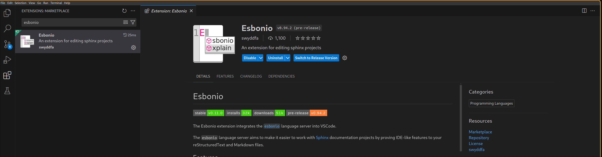
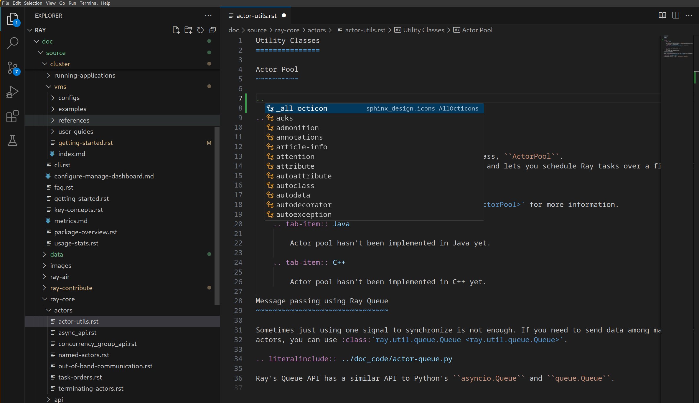
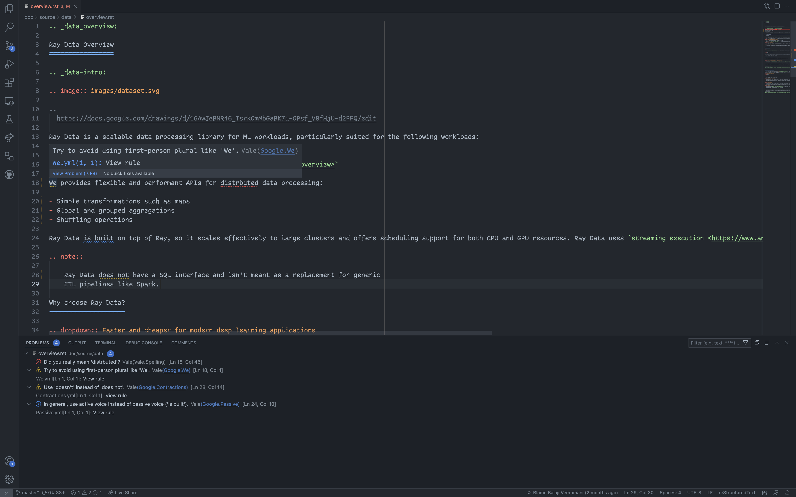

Contributing to the Ray Documentation#
There are many ways to contribute to the Ray documentation, and we’re always looking for new contributors. Even if you just want to fix a typo or expand on a section, please feel free to do so!
This document walks you through everything you need to do to get started.
Editorial style#
We follow the Google developer documentation style guide. Here are some highlights:
The editorial style is enforced in CI by Vale. For more information, see How to use Vale.
Building the Ray documentation#
If you want to contribute to the Ray documentation, you need a way to build it. Don’t install Ray in the environment you plan to use to build documentation. The requirements for the docs build system are generally not compatible with those you need to run Ray itself.
Follow the these instructions to build the documentation:
Fork Ray#
Clone the forked repository to your local machine
Next, change into the ray/doc directory:
cd ray/doc
Install dependencies#
If you haven’t done so already, create a Python environment separate from the one you use to build and run Ray, preferably using the latest version of Python. For example, if you’re using conda:
conda create -n docs python=3.12
Next, activate the Python environment you are using (e.g., venv, conda, etc.). With conda this would be:
conda activate docs
Install the documentation dependencies with the following command:
pip install -r requirements-doc.txt
Don’t use -U in this step. You don’t want to upgrade dependencies because requirements-doc.txt pins exact versions you need to build the docs.
Build documentation#
Before building, clean your environment first by running:
make clean
Choose from the following 2 options to build documentation locally:
Incremental build
Full build
1. Incremental build with global cache and live rendering#
To use this option, you can run:
make local
This option is recommended if you need to make frequent uncomplicated and small changes like editing text, adding things within existing files, etc.
In this approach, Sphinx only builds the changes you made in your branch compared to your last pull from upstream master. The rest of doc is cached with pre-built doc pages from your last commit from upstream (for every new commit pushed to Ray, CI builds all the documentation pages from that commit and store them on S3 as cache).
The build first traces your commit tree to find the latest commit that CI already cached on S3.
Once the build finds the commit, it fetches the corresponding cache from S3 and extracts it into the doc/ directory. Simultaneously, CI tracks all the files that have changed from that commit to current HEAD, including any un-staged changes.
Sphinx then rebuilds only the pages that your changes affect, leaving the rest untouched from the cache.
When build finishes, the doc page would automatically pop up on your browser. If any change is made in the doc/ directory, Sphinx would automatically rebuild and reload your doc page. You can stop it by interrupting with Ctrl+C.
For more complicated changes that involve adding or removing files, always use make develop first, then you can start using make local afterwards to iterate on the cache that make develop produces.
2. Full build from scratch#
In the full build option, Sphinx rebuilds all files in doc/ directory, ignoring all cache and saved environment.
Because of this behavior, you get a really clean build but it’s much slower.
make develop
Find the documentation build in the _build directory.
After the build finishes, you can simply open the _build/html/index.html file in your browser.
It’s considered good practice to check the output of your build to make sure everything is working as expected.
Before committing any changes, make sure you run the
linter
with ../scripts/format.sh from the doc folder,
to make sure your changes are formatted correctly.
Code completion and other developer tooling#
If you find yourself working with documentation often, you might find the esbonio language server to be useful. Esbonio provides context-aware syntax completion, definitions, diagnostics, document links, and other information for RST documents. If you’re unfamiliar with language servers, they are important pieces of a modern developer’s toolkit; if you’ve used pylance or python-lsp-server before, you’ll know how useful these tools can be.
Esbonio also provides a vscode extension which includes a live preview. Simply install the esbonio vscode extension to start using the tool:

As an example of Esbonio’s autocompletion capabilities, you can type .. to pull up an autocomplete menu for all RST directives:

Esbonio also can be used with neovim - see the lspconfig repository for installation instructions.
The basics of our build system#
The Ray documentation is built using the sphinx build system.
We’re using the PyData Sphinx Theme for the documentation.
We use myst-parser to allow you to write Ray documentation in either Sphinx’s native
reStructuredText (rST) or in
Markedly Structured Text (MyST).
The two formats can be converted to each other, so the choice is up to you.
Having said that, it’s important to know that MyST is
common markdown compliant. Past experience has shown that most developers are familiar with md syntax, so
if you intend to add a new document, we recommend starting from an .md file.
The Ray documentation also fully supports executable formats like Jupyter Notebooks. Many of our examples are notebooks with MyST markdown cells.
What to contribute?#
If you take Ray Tune as an example, you can see that our documentation is made up of several types of documentation, all of which you can contribute to:
This structure is reflected in the Ray documentation source code as well, so you should have no problem finding what you’re looking for. All other Ray projects share a similar structure, but depending on the project there might be minor differences.
Each type of documentation listed above has its own purpose, but at the end our documentation comes down to two types of documents:
Markup documents, written in MyST or rST. If you don’t have a lot of (executable) code to contribute or use more complex features such as tabbed content blocks, this is the right choice. Most of the documents in Ray Tune are written in this way, for instance the key concepts or API documentation.
Notebooks, written in
.ipynbformat. All Tune examples are written as notebooks. These notebooks render in the browser like.mdor.rstfiles, but have the added benefit that users can easily run the code themselves.
Fixing typos and improving explanations#
If you spot a typo in any document, or think that an explanation is not clear enough, please consider opening a pull request. In this scenario, just run the linter as described above and submit your pull request.
Adding API references#
We use Sphinx’s autodoc extension to generate our API documentation from our source code. In case we’re missing a reference to a function or class, please consider adding it to the respective document in question.
For example, here’s how you can add a function or class reference using autofunction and autoclass:
.. autofunction:: ray.tune.integration.docker.DockerSyncer
.. autoclass:: ray.tune.integration.keras.TuneReportCallback
The above snippet was taken from the Tune API documentation, which you can look at for reference.
If you want to change the content of the API documentation, you will have to edit the respective function or class
signatures directly in the source code.
For example, in the above autofunction call, to change the API reference for ray.tune.integration.docker.DockerSyncer,
you would have to change the following source file.
To show the usage of APIs, it is important to have small usage examples embedded in the API documentation. These should be self-contained and run out of the box, so a user can copy and paste them into a Python interpreter and play around with them (e.g., if applicable, they should point to example data). Users often rely on these examples to build their applications. To learn more about writing examples, read How to write code snippets.
Adding code to an .rST or .md file#
Modifying text in an existing documentation file is easy, but you need to be careful when it comes to adding code. The reason is that we want to ensure every code snippet on our documentation is tested. This requires us to have a process for including and testing code snippets in documents. To learn how to write testable code snippets, read How to write code snippets.
from ray import train
def objective(x, a, b): # Define an objective function.
return a * (x ** 0.5) + b
def trainable(config): # Pass a "config" dictionary into your trainable.
for x in range(20): # "Train" for 20 iterations and compute intermediate scores.
score = objective(x, config["a"], config["b"])
train.report({"score": score}) # Send the score to Tune.
This code is imported by literalinclude from a file called doc_code/key_concepts.py.
Every Python file in the doc_code directory will automatically get tested by our CI system,
but make sure to run scripts that you change (or new scripts) locally first.
You do not need to run the testing framework locally.
In rare situations, when you’re adding obvious pseudo-code to demonstrate a concept, it is ok to add it
literally into your .rST or .md file, e.g. using a .. code-cell:: python directive.
But if your code is supposed to run, it needs to be tested.
Creating a new document from scratch#
Sometimes you might want to add a completely new document to the Ray documentation, like adding a new user guide or a new example.
For this to work, you need to make sure to add the new document explicitly to a parent document’s toctree, which determines the structure of the Ray documentation. See the sphinx documentation for more information.
Depending on the type of document you’re adding, you might also have to make changes to an existing overview
page that curates the list of documents in question.
For instance, for Ray Tune each user guide is added to the
user guide overview page as a panel, and the same
goes for all Tune examples.
Always check the structure of the Ray sub-project whose documentation you’re working on to see how to integrate
it within the existing structure.
In some cases you may be required to choose an image for the panel. Images are located in
doc/source/images.
Creating a notebook example#
To add a new executable example to the Ray documentation, you can start from our
MyST notebook template or
Jupyter notebook template.
You could also simply download the document you’re reading right now (click on the respective download button at the
top of this page to get the .ipynb file) and start modifying it.
All the example notebooks in Ray Tune get automatically tested by our CI system, provided you place them in the
examples folder.
If you have questions about how to test your notebook when contributing to other Ray sub-projects, please make
sure to ask a question in the Ray community Slack or directly on GitHub,
when opening your pull request.
To work off of an existing example, you could also have a look at the
Ray Tune Hyperopt example (.ipynb)
or the Ray Serve guide for text classification (.md).
We recommend that you start with an .md file and convert your file to an .ipynb notebook at the end of the process.
We’ll walk you through this process below.
What makes these notebooks different from other documents is that they combine code and text in one document, and can be launched in the browser. We also make sure they are tested by our CI system, before we add them to our documentation. To make this work, notebooks need to define a kernel specification to tell a notebook server how to interpret and run the code. For instance, here’s the kernel specification of a Python notebook:
---
jupytext:
text_representation:
extension: .md
format_name: myst
kernelspec:
display_name: Python 3
language: python
name: python3
---
If you write a notebook in .md format, you need this YAML front matter at the top of the file.
To add code to your notebook, you can use the code-cell directive.
Here’s an example:
```python
import ray
import ray.rllib.agents.ppo as ppo
from ray import serve
def train_ppo_model():
trainer = ppo.PPOTrainer(
config={"framework": "torch", "num_workers": 0},
env="CartPole-v0",
)
# Train for one iteration
trainer.train()
trainer.save("/tmp/rllib_checkpoint")
return "/tmp/rllib_checkpoint/checkpoint_000001/checkpoint-1"
checkpoint_path = train_ppo_model()
```
Putting this markdown block into your document will render as follows in the browser:
import ray
import ray.rllib.agents.ppo as ppo
from ray import serve
def train_ppo_model():
trainer = ppo.PPOTrainer(
config={"framework": "torch", "num_workers": 0},
env="CartPole-v0",
)
# Train for one iteration
trainer.train()
trainer.save("/tmp/rllib_checkpoint")
return "/tmp/rllib_checkpoint/checkpoint_000001/checkpoint-1"
checkpoint_path = train_ppo_model()
Reference section labels#
Reference sections labels are a way to link to specific parts of the documentation from within a notebook. Creating one inside a markdown cell is simple:
(my-label)=
# The thing to label
Then, you can link it in .rst files with the following syntax:
See {ref}`the thing that I labeled <my-label>` for more information.
Testing notebooks#
Removing cells can be particularly interesting for compute-intensive notebooks. We want you to contribute notebooks that use realistic values, not just toy examples. At the same time we want our notebooks to be tested by our CI system, and running them should not take too long. What you can do to address this is to have notebook cells with the parameters you want the users to see first:
```{code-cell} python3
num_workers = 8
num_gpus = 2
```
which will render as follows in the browser:
num_workers = 8
num_gpus = 2
But then in your notebook you follow that up with a removed cell that won’t get rendered, but has much smaller values and make the notebook run faster:
```{code-cell} python3
:tags: [remove-cell]
num_workers = 0
num_gpus = 0
```
Converting markdown notebooks to ipynb#
Once you’re finished writing your example, you can convert it to an .ipynb notebook using jupytext:
jupytext your-example.md --to ipynb
In the same way, you can convert .ipynb notebooks to .md notebooks with --to myst.
And if you want to convert your notebook to a Python file, e.g. to test if your whole script runs without errors,
you can use --to py instead.
How to use Vale#
What is Vale?#
Vale checks if your writing adheres to the Google developer documentation style guide. It’s only enforced on the Ray Data documentation.
Vale catches typos and grammatical errors. It also enforces stylistic rules like “use contractions” and “use second person.” For the full list of rules, see the configuration in the Ray repository.
How do you run Vale?#
How to use the VSCode extension#
Install Vale. If you use macOS, use Homebrew.
brew install vale
Otherwise, use PyPI.
pip install vale
For more information on installation, see the Vale documentation.
Install the Vale VSCode extension by following these installation instructions.
VSCode should show warnings in your code editor and in the “Problems” panel.

How to run Vale on the command-line#
Install Vale. If you use macOS, use Homebrew.
brew install vale
Otherwise, use PyPI.
pip install vale
For more information on installation, see the Vale documentation.
Run Vale in your terminal
vale doc/source/data/overview.rstVale should show warnings in your terminal.
❯ vale doc/source/data/overview.rst doc/source/data/overview.rst 18:1 warning Try to avoid using Google.We first-person plural like 'We'. 18:46 error Did you really mean Vale.Spelling 'distrbuted'? 24:10 suggestion In general, use active voice Google.Passive instead of passive voice ('is built'). 28:14 warning Use 'doesn't' instead of 'does Google.Contractions not'. ✖ 1 error, 2 warnings and 1 suggestion in 1 file.
How to handle false Vale.Spelling errors#
To add custom terminology, complete the following steps:
If it doesn’t already exist, create a directory for your team in
.vale/styles/Vocab. For example,.vale/styles/Vocab/Data.If it doesn’t already exist, create a text file named
accept.txt. For example,.vale/styles/Vocab/Data/accept.txt.Add your term to
accept.txt. Vale accepts Regex.
For more information, see Vocabularies in the Vale documentation.
How to handle false Google.WordList errors#
Vale errors if you use a word that isn’t on Google’s word list.
304:52 error Use 'select' instead of Google.WordList
'check'.
If you want to use the word anyway, modify the appropriate field in the WordList configuration.
Troubleshooting#
If you run into a problem building the docs, following these steps can help isolate or eliminate most issues:
Clean out build artifacts. Use
make cleanto clean out docs build artifacts in the working directory. Sphinx uses caching to avoid doing work, and this sometimes causes problems. This is particularly true if you build the docs, thengit pull origin masterto pull in recent changes, and then try to build docs again.Check your environment. Use
pip listto check the installed dependencies. Compare them todoc/requirements-doc.txt. The documentation build system doesn’t have the same dependency requirements as Ray. You don’t need to run ML models or execute code on distributed systems in order to build the docs. In fact, it’s best to use a completely separate docs build environment from the environment you use to run Ray to avoid dependency conflicts. When installing requirements, dopip install -r doc/requirements-doc.txt. Don’t use-Ubecause you don’t want to upgrade any dependencies during the installation.Ensure a modern version of Python. The docs build system doesn’t keep the same dependency and Python version requirements as Ray. Use a modern version of Python when building docs. Newer versions of Python can be substantially faster than preceding versions. Consult https://endoflife.date/python for the latest version support information.
Enable breakpoints in Sphinx. Add -P to the
SPHINXOPTSindoc/Makefileto tellsphinxto stop when it encounters a breakpoint, and remove-j autoto disable parallel builds. Now you can put breakpoints in the modules you’re trying to import, or insphinxcode itself, which can help isolate build stubborn build issues.[Incremental build] Side navigation bar doesn’t reflect new pages If you are adding new pages, they should always show up in the side navigation bar on index pages. However, incremental builds with
make localskips rebuilding many other pages, so Sphinx doesn’t update the side navigation bar on those pages. To build docs with correct side navigation bar on all pages, consider usingmake develop.
Where to go from here?#
There are many other ways to contribute to Ray other than documentation. See our contributor guide for more information.